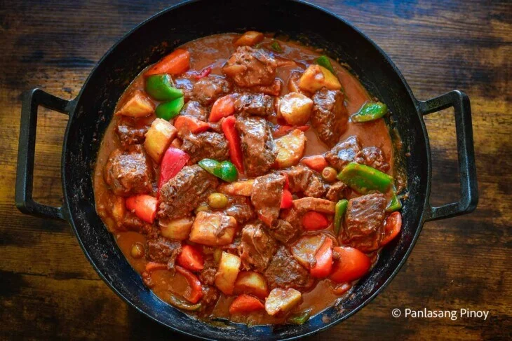

Caldereta

Description
Caldereta, a Filipino dish of rich, tender beef simmered in a luscious, tomato-based sauce, is one of the most sought-after meat dishes at every Filipino gathering.
Ingredients
- 2 lbs beef chuck, cut into cubes
- 1/4 cup cooking oil
- 1 large onion, chopped
- 4 cloves garlic, minced
- 2 medium potatoes, peeled and cubed
- 2 medium carrots, peeled and sliced
- 1 red bell pepper, sliced
- 1 green bell pepper, sliced
- 1 cup tomato sauce
- 1/2 cup liver spread or pâté
- 1/4 cup soy sauce
- 1/4 cup vinegar
- 1 cup beef broth or water
- 2 bay leaves
- Salt and pepper to taste
Steps
- In a large pot, heat the cooking oil over medium heat. Add the chopped onion and minced garlic, sauté until fragrant.
- Add the beef cubes and cook until browned on all sides.
- Pour in the soy sauce and vinegar, stirring to coat the beef. Let it simmer for a few minutes.
- Add the tomato sauce, liver spread, and beef broth or water. Stir well to combine.
- Add the bay leaves, cover the pot, and let it simmer on low heat for about 1 to 1.5 hours or until the beef is tender.
- Add the cubed potatoes and sliced carrots. Continue to simmer until the vegetables are cooked through.
- Add the sliced red and green bell peppers. Cook for an additional 5-10 minutes.
- Season with salt and pepper to taste. Remove from heat and serve hot with steamed rice.